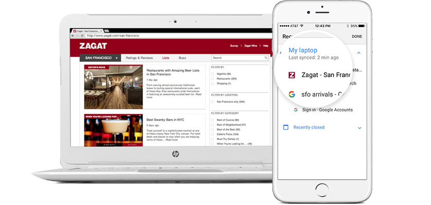

Enjoy surfing the web in different dimensions.
One browser for your computer, smartphone, tablet Download Chrome spanFor Windows 10/8.1/8/7 64-bit Download Chrome for other platforms

Faster web usage
Quick search
Search and browse in one window at the same time. As you type, you'll see search results and suggestions, including recently searched words and websites you visit, so you can easily choose. You can get the results you want in no time at all. Search in address bar
Autocomplete
You do not have to enter everything on a small screen. With AutoComplete, you can fill out forms with just one click. It also has automatic suggestions so you can save time because you only need to enter a few URLs and search terms. Using Autocomplete
Continue at the stop
If you switch to a mobile phone while using your laptop, you do not have to search again for the web page you were reading. With Chrome, you can instantly access open tabs, bookmarks, and recent search results from any device. In this way, you can see the web you've opened from any device. Learn more
Create your own Chrome
Use the Chrome themes, apps, and extensions to use the internet the way you want. Bookmarks let you go directly to your favorite website and open the page. Once you've set up Chrome, your custom settings will sync to all of your devices. Begin customization


Download Chrome for Windows
One browser for your computer, smartphone, tablet Download Chrome spanFor Windows 10/8.1/8/7 64-bit Download Chrome for other platforms